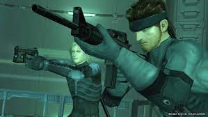
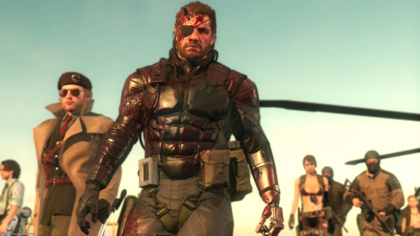

Sobre
Metal Gear é uma série de jogos enquadrados na categoria stealth, criada por Hideo Kojima e produzida
pela Konami. Nele, o jogador tem o controle de um soldado altamente treinado em infiltração (Solid
Snake, Big Boss ou Raiden) e tem que enfrentar armas com capacidade de destruição em massa, Metal Gear,
tanques gigantescos com capacidade de lançar ataques nucleares em qualquer terreno ou área do globo. A
série é famosa por ser a primeira a fazer parte da categoria "stealth", devido às suas longas cenas
cinemáticas, enredos complexos e sua exploração da natureza da política, guerras, censura, engenharia
genética, inteligência artificial, lealdade, realidade, "verdade" subjetiva vs. universal e temas
filosóficos, além de frequentemente derrubar a quarta parede.

Curiosidades
O primeiro jogo da série Metal Gear foi lançado em 1987 para o MSX2, com uma conversão inferior para o
NES.
Em 1990, foi lançada a sua sequência, Metal Gear 2: Solid Snake. Com o surgimento da quinta geração de
consoles, Hideo Kojima conseguiu usar o potencial do PlayStation para criar o Metal Gear Solid com
gráficos
3D excepcionais (para a época) e dublagens em todas as línguas. Depois de MGS, ainda vieram as suas
sequelas
Metal Gear Solid 2: Sons of Liberty para Playstation 2, Xbox e PC, e Metal Gear Solid 3: Snake Eater
para a
PlayStation 2. Uma versão para o PlayStation 3 da série foi lançada, em 12 de junho de 2008, pela Kojima
Productions, chamada Metal Gear Solid 4: Guns of the Patriots. Foi desenvolvido Metal Gear
Rising:Revengeance, um spin-off com Raiden, para as plataformas Xbox 360, Playstation 3 e Windows.
.jpg)
Futuro da Saga
No dia 24 de outubro de 2023, na PlayStation Showcase, a Konami anuncia Metal Gear Solid Delta: Snake
Eater,
um remake de Metal Gear Solid 3: Snake Eater, junta de uma coletânea Metal Gear Solid, Metal Gear Solid
2:
Sons of Liberty e Metal Gear Solid 3: Snake Eater, intitulada Metal Gear Solid Master Collection Vol.1
